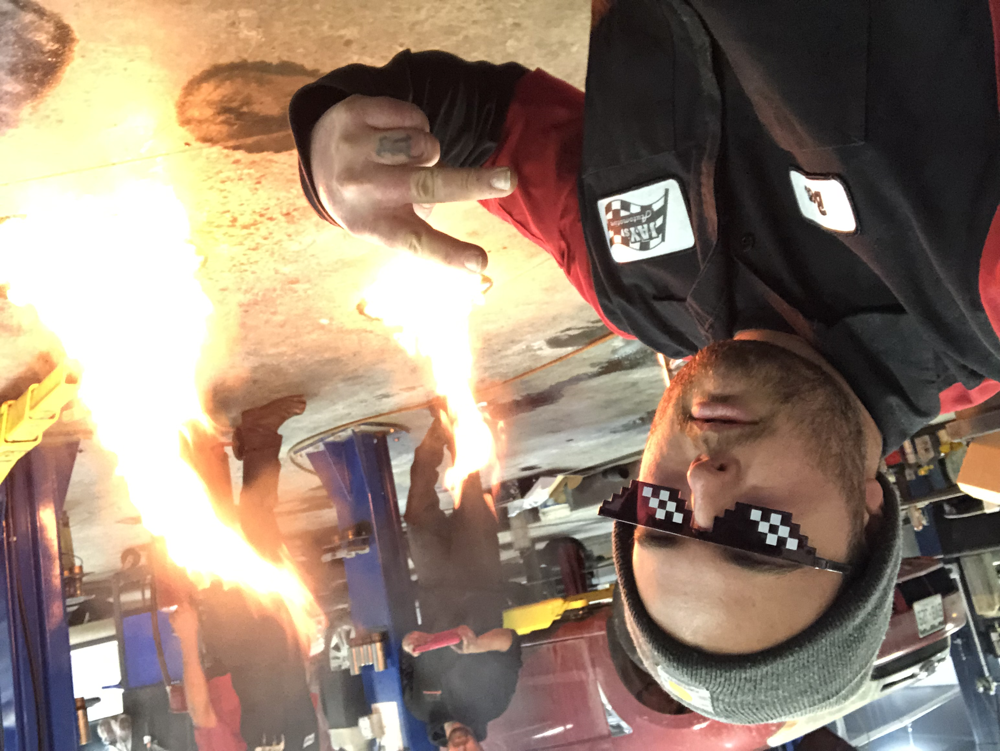

When you have car problems, they rarely occur at a decent time. This is often accompanied with a lot of stress, inconvenience, and sometimes tow truck fees. After submitting your vehicle to a normal mechanic shop, it could take days before the problem is solved. Here at Ben’s Mobile Mechanic Truck, we promise quick service by offering on-call technicians that can meet you at your home or the site of the breakdown. Excluding any major engine overhauls, we guarantee to have your vehicle fixed and back on the road the same day.
Many people experience inconvenience at a normal mechanic shop. This can include long wait times, and service writers who tried to upsell you on parts and attempt to convince you to get repairs that are unnecessary. With our mobile mechanic service, we promise to give you the most professional and honest work to get you back on the road. Our customers can watch and ask questions to our technician so that you feel comfortable and confident that you’re receiving the best service!

(c) 2026 Ben's Mobile Mechanic Truck. All Rights Reserved.